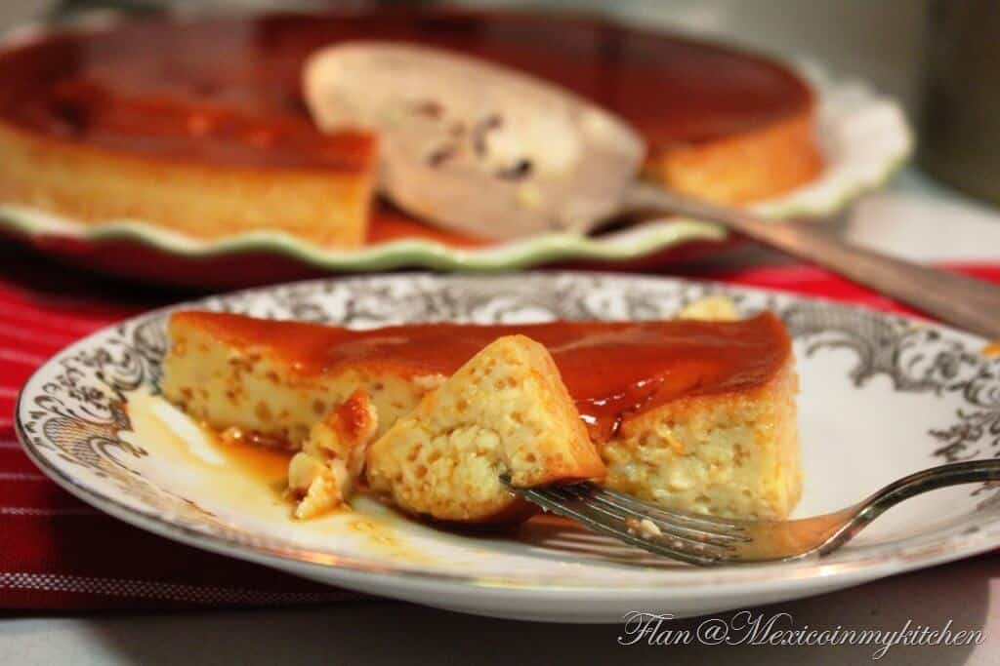

Flan mexicano

Description
Crème caramel or flan is a French custard dessert with whole eggs, egg yolks, milk, and sugar. It's baked in a bain-marie or water bath to obtain a smooth and creamy texture. Its most distinctive feature is its caramel sauce coating.
In Mexico, this traditional caramel custard recipe is called “flan,” but if you add cream cheese, we know it as “Flan Napolitano (Neapolitan flan),” which is also a delight.
Ingredients
- 1 cup sugar (granulated sugar)
- 1 can (14 oz) sweetened condensed milk
- 1 can (12 oz) evaporated milk
- ¼ cup half & half, or heavy cream (optional)
- 6 whole eggs at room temperature
- teaspoons vanilla extract or one vanilla bean
Steps
- Preheat the oven to 350 degrees Fahrenheit (approx.180 degrees C.).
Bring 4-6 cups of water to a boil in the large pot. The exact amount will depend on the size of the pan you use for double-boiler baking.
Place the baking dish you are using near where you will make the caramel. I used a 9.5-inch (24 cm) diameter glass pie pan for this recipe.
- Prepare the Caramel
Pour the sugar into the pan or skillet and place on the stove over medium-high heat. When you see that the sugar begins to look a little liquid on the edges, reduce the temperature to medium heat and start stirring with the wooden spoon.
At first, the sugar will look like little rocks, but as you continue stirring, it will start melting.
Adjust the heat to medium-low and continue stirring until the sugar becomes liquid and turns golden or amber in color. The entire process will take approximately 5 minutes; however, once the sugar is in a liquid state, it burns easily, so keep an eye on it.
Pour the sugar into the baking dish and move it carefully so that the sugar covers the entire bottom. Set aside.
- Prepare the Custard Mixture
Pour the evaporated milk, condensed milk, half and half or heavy cream (this ingredient is optional, but the flan is creamier with it), whole eggs, and vanilla into a blender pitcher.
Blend the ingredients at the lowest speed of your blender for a few seconds until everything is well combined.
If you use a low speed, the mixture won't form a lot of foam or air bubbles; we are looking for a velvety texture. But don't worry if you see air bubbles; the flavor will be the same.
- Bake the Flan in a Bain Marie
Place the baking dish inside the large roasting pan.Pour in the custard base, passing it through the strainer into the baking dish. Cover it with foil.Transport to the oven. Carefully pour the hot water into the larger roasting pan, making sure the water level reaches at least halfway up the side of the baking dish.
Bake for 50-60 minutes. The time may vary depending on the size of the mold you used and your oven.
- To know when the flan is ready, lift the aluminum foil and carefully shake the baking dish. If the flan gives a slight jiggle in the center (like gelatine) or if when you insert a toothpick in the center, it comes out clean, it's ready.
Take the flan out of the oven, but leave it in the water bath and wait until the water is lukewarm to the touch. At that moment, you will see the flan is firmer, but when you shake it, you will notice an almost imperceptible movement in the center.
If, on the contrary, when you shake it in the oven, you notice that the center moves a lot, cover it with the aluminum foil again and bake it for another 5 minutes. Check again. Please resist the temptation to continue baking until it is completely firm; otherwise, it will overcook and be harder and less creamy when you serve it.
- Let it cool
Remove the flan from the water and let it cool completely on the kitchen counter. Then, put it in the refrigerator for at least 5 hours, although it is best to leave it overnight, which makes it a great make-ahead recipe.
- Unmold the Flan
Take the flan out of the refrigerator and run a knife along the entire edge of the baking dish to loosen it.
Place the tray or plate where you are going to serve it, face down on the baking dish. Turn it over and place it on a smooth surface in one quick motion.
The flan will gradually come down until it falls completely into the tray. Pour the caramel on top of the flan and enjoy.
You can decorate it with edible flowers, berries, fresh fruit, or simply with a sprig of mint.